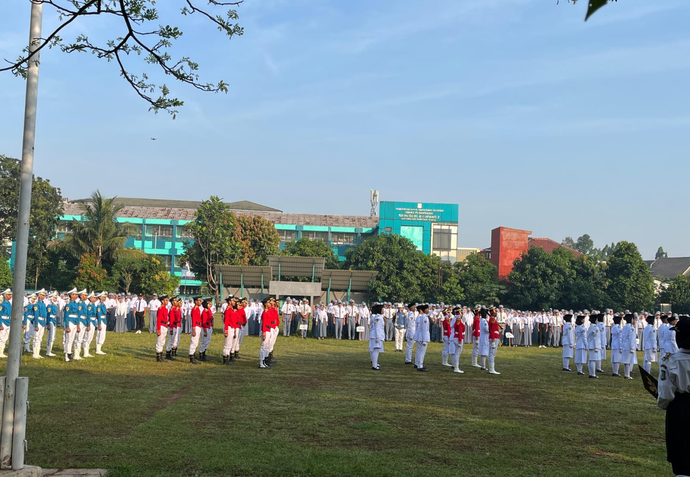
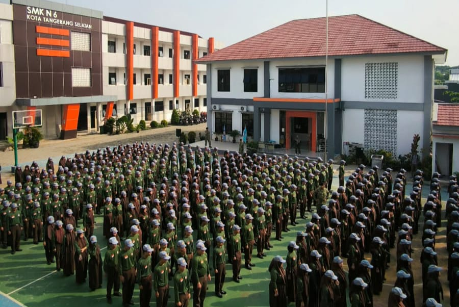
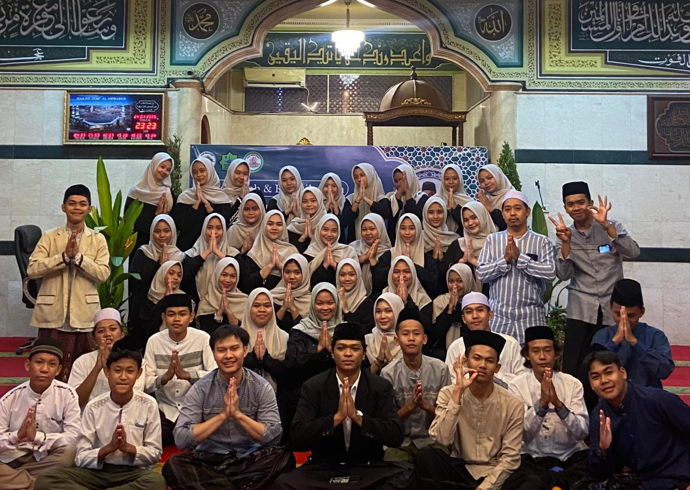

🎨 Kreativitas
Saya memiliki minat dalam bidang kreativitas dan senang menuangkan ide ke dalam berbagai bentuk. Saya suka mencoba membuat sesuatu yang menarik, mencari ide-ide baru, serta mengembangkan cara kreatif dalam melakukan berbagai hal. Bagi saya, mencoba hal baru adalah salah satu cara untuk mengembangkan kreativitas dan kemampuan diri.
🌷 Minat & Harapan dimasa depan
Saya memiliki minat untuk terus mengembangkan kemampuan dan mencoba berbagai hal baru. Di masa depan, saya berharap dapat melanjutkan pendidikan ke perguruan tinggi, khususnya di bidang manajemen atau bisnis. Saya juga ingin menjadi seorang pengusaha yang sukses, memiliki usaha sendiri, dan terus mengembangkan kemampuan agar dapat mencapai cita-cita saya.
Berbagai pengalaman yang telah mengajarkan saya banyak hal

Upacara Hut ke-80 kemerdekaan
Pada tahun 2025, saya berkesempatan mengikuti kegiatan Paskibra tingkat sekolah dalam rangka upacara peringatan Hari Kemerdekaan Indonesia pada 17 Agustus.
Melalui kegiatan ini, saya belajar tentang kedisiplinan, tanggung jawab, kekompakan, dan kerja sama dalam sebuah tim. Pengalaman ini menjadi salah satu pengalaman yang berkesan bagi saya.

ketarunaan
Saya mengikuti kegiatan ketarunaan di sekolah yang mengajarkan saya tentang kedisiplinan, tanggung jawab, kekompakan, dan jiwa korsa.
Dari kegiatan ini, saya belajar untuk saling membantu, menghargai, dan menjaga kekompakan dengan teman-teman. Walaupun ada kegiatan yang cukup menantang, saya menikmati prosesnya karena bisa mendapatkan pengalaman baru dan belajar menjadi lebih disiplin.

Pengalaman di IRMA Alwabin
Saya mengikuti kegiatan IRMA Alwabin, yaitu kegiatan pengajian bersama para remaja. Saya juga pernah ikut membantu sebagai panitia dalam beberapa acara, salah satunya acara Maulid. Melalui kegiatan ini, saya belajar untuk bekerja sama, bertanggung jawab, dan menjadi lebih aktif dalam berbagai kegiatan dan menambah pengalaman.
Beberapa Projects yang saya sudah buat selama belajar saat ini:
My first UI/UX Project
Project ini saya buat saat kelas 10 menggunakan Figma. Saya merancang desain UI/UX aplikasi Instagram dengan memperhatikan tampilan, tata letak, ikon, dan navigasi agar terlihat menarik serta mudah digunakan. Dari project ini, saya belajar mengenal dasar-dasar UI/UX dan mendapatkan pengalaman dalam membuat desain aplikasi menggunakan Figma.
Biodata design-figma
Project ini saya buat menggunakan Figma untuk membuat desain biodata diri. Saya menyusun informasi seperti nama, data diri, dan minat. Saya juga menambahkan data tentang teman terbaik saya serta beberapa informasi pribadi lainnya. Dari project ini, saya belajar mengatur tata letak dan menggunakan fitur dasar Figma untuk membuat desain yang rapi dan menarik.
Too do list
Project ini saya buat dengan membuat aplikasi To-Do List yang dapat digunakan untuk mencatat dan mengatur daftar tugas. Aplikasi ini terhubung dengan database MySQL melalui XAMPP, sehingga data tugas dapat disimpan dan dikelola. Saya membuat aplikasi ini menggunakan Visual Studio Installer dan MySQL XAMPP. Dari project ini, saya belajar membuat aplikasi serta menghubungkan dan mengelola data dengan database.